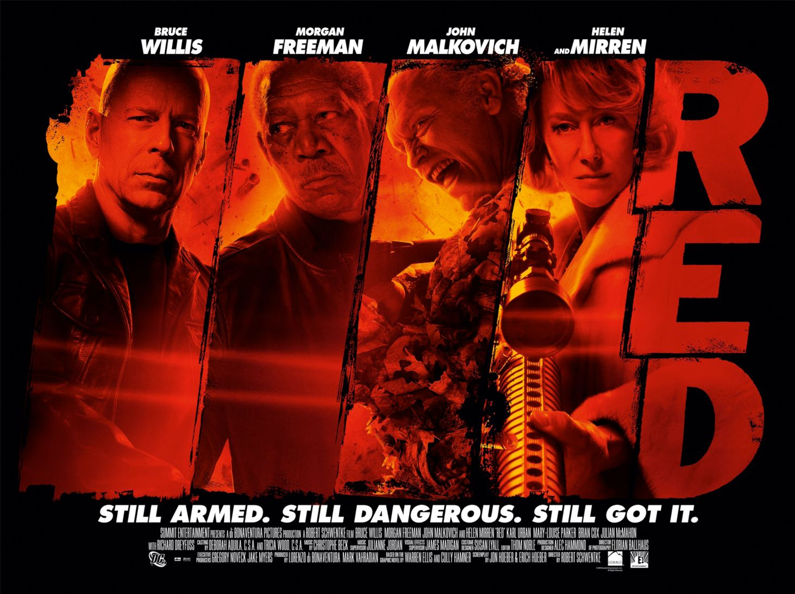
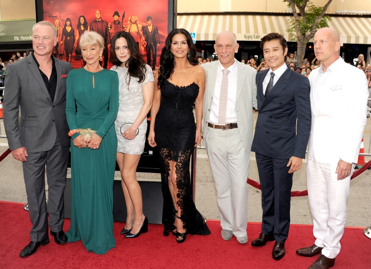
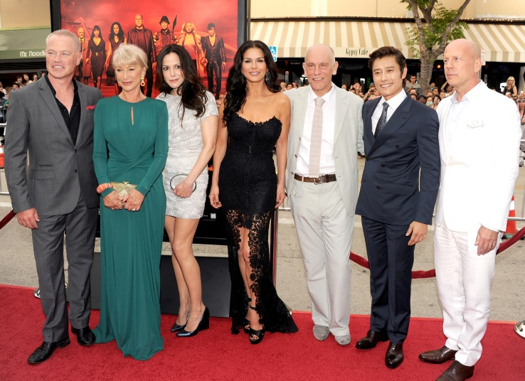

«РЭД» (англ. RED) — художественный фильм Роберта Швентке в жанре ко- медийного боевика, вышедший на экраны 29 сентября 2010 года.Фильм является экранизацией одноимённого комикса, созданного Уорреном Эллисом и Калли Хэмнером и опубликованного издательством DC Comics. Сценарий по комиксу написали Джон Хибер и Эрик Хибер.Главную роль в фильме исполняет Брюс Уиллис.
 
